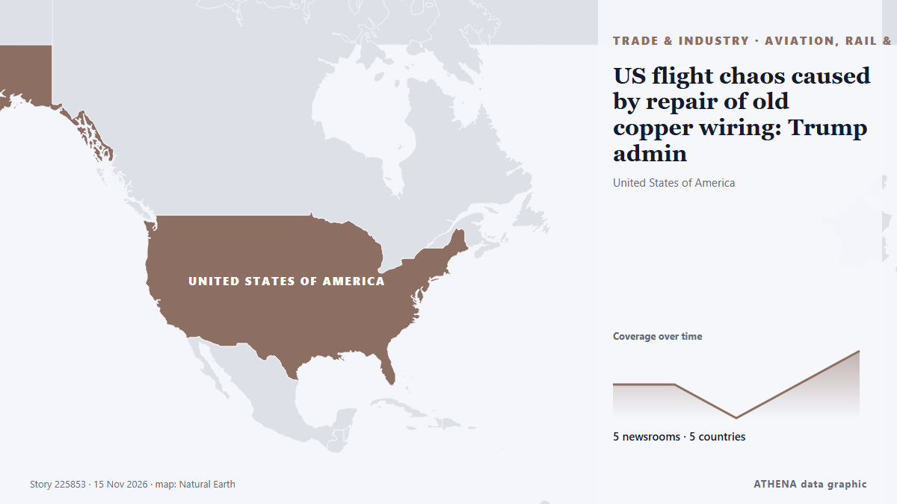

Εμπόριο, Βιομηχανία & Υποδομές
ΧορηγούμενοΠαρουσιάζεται από  Cybernetics and Artificial Intelligence Lab Welcome to the Cybernetics and Artificial Intelligence Laboratory, established at the Department of Business Administration of the National and Kapodistrian University of Athens. The lab is headed by Professor Dimitrios Thomakos. The lab aims to do research that can be published in top venues. Our research uses tools and methods of Artificial Intelligence, and lies in the following areas: - Forecasting - Decision making - Cyber security - Finance We are always looking forward to collaborating with exceptional students!
Cybernetics and Artificial Intelligence Lab Welcome to the Cybernetics and Artificial Intelligence Laboratory, established at the Department of Business Administration of the National and Kapodistrian University of Athens. The lab is headed by Professor Dimitrios Thomakos. The lab aims to do research that can be published in top venues. Our research uses tools and methods of Artificial Intelligence, and lies in the following areas: - Forecasting - Decision making - Cyber security - Finance We are always looking forward to collaborating with exceptional students!
Οι τίτλοι των ειδήσεων παρουσιάζονται στα αγγλικά, όπως δημοσιεύτηκαν.

Αερομεταφορές, σιδηρόδρομος & οδικέςUS flight chaos caused by repair of old copper wiring: Trump admin
Weary travellers endured more flight disruptions as service resumed at US airports after an hours-long total stoppage, with officials saying the situation should return to normal on Sunday. από Dawn
| 2 Νοε | 128 |
|---|---|
| 3 Νοε | 91 |
| 4 Νοε | 93 |
| 5 Νοε | 105 |
| 6 Νοε | 75 |
| 7 Νοε | 44 |
| 8 Νοε | 49 |
| 9 Νοε | 118 |
| 10 Νοε | 145 |
| 11 Νοε | 109 |
| 12 Νοε | 93 |
| 13 Νοε | 81 |
| 14 Νοε | 52 |
| 15 Νοε | 5 |
US aviation shutdown blamed on L3 Harris installed router
WASHINGTON, Nov 14 - A massive, nearly five-hour shutdown of the US aviation system that has disrupted more than 20,000 flights since Friday may have been the fault of a single router installed by… από The Straits Times
Iran’s IRGC says two oil tankers hit mines in Strait of Hormuz
"One of the vessels is a supertanker; it is currently engulfed in flames following a powerful explosion," the Iranian Revolutionary Guard Corps (IRGC) Navy spokesperson said. από The Jerusalem Post
US flight suspension linked to copper wire upgrade, transport secretary says
US Transportation Secretary Sean Duffy says the disruption appears to have originated during maintenance work on ageing copper cables, with no indication of a foreign cyberattack, as thousands of… από ProtoThema English
US lifts ground stop, but passengers face second day of flight disruption
More than 1.5 million passengers face travel disruption as domestic and international airlines warn of knock-on delays. από Al Jazeera English
US to resume flights after air traffic network failure sparks chaos
US Transportation Secretary Sean Duffy said US airspace reopened at 8.15pm eastern time, but warned that flights would resume gradually and normal operations would take time to restore. από Free Malaysia Today
Oil tanker on fire after hitting mine in Strait of Hormuz
Coalition says it destroyed two ballistic missile launchers The Coalition has released footage it says shows the targeting and destruction of two ballistic missile launch platforms. από Gulf News
3,000+ flights canceled after FAA's ground stop
U.S. air traffic is slowly returning to normal after a nationwide ground stop Friday halted flights and left thousands canceled and delayed. από The Hill
US flight disruptions continue as air travel slowly recovers
Airlines cancelled and delayed thousands of flights on Saturday as the US struggled to recover from the longest nationwide flight shutdown since 9/11. από The New Arab
US flights resume after rare hours-long nationwide grounding but cancellations, delays persist
Weary travellers braced for more delays and cancellations on Saturday as flights resumed from US airports after being grounded for four hours due to a major outage on outdated communications systems. από Dawn
UN official urges Iran, US to let fertilizers through Hormuz Strait
A senior UN official has called on Iran and the US to allow fertilizer shipments through the Strait of Hormuz to alleviate poverty risks in vulnerable countries. από Arab News
Tanker collides with cruise ship in New Orleans, 32 hospitalized
A tanker in New Orleans that apparently lost its steering slammed into a docked river cruise boat with 180 people aboard Friday, the mayor said. από The Canadian Press (via CityNews)
Trump official seeks $50 billion for air traffic control after outage
Transportation secretary Sean Duffy, White House ask for $30.1b to upgrade aging airports, air traffic control system. από Express Tribune
Iraq turns to trucks to export oil in overland Syrian route revival
BASRA, Iraq: Outside a depot near Basra, hundreds of tanker trucks queue to load Iraqi crude oil bound for the Syrian port of Baniyas via an overland desert route which had been largely unused for… από Arab News
Expect more flight cancellations, says US transport chief
More than 20,000 flights were affected by Friday's nationwide stoppage, with over 3,800 cancellations and 2,100 delays reported on Saturday. από Free Malaysia Today
Canada’s Carney touts Philippine trade deal on Asia tour
Canadian Prime Minister Mark Carney announced a new trade agreement with the Philippines, aiming to lessen reliance on the United States amid trade tensions. από Arab News
Mozambique: President Chapo begins working visit to the UAE
President Daniel Chapo is undertaking a working visit to the United Arab Emirates (UAE) from today until Sunday, at the invitation of his counterpart, Mohammed bin Zayed Al Nahyan. από Club of Mozambique
US airspace reopens after nationwide flight shutdown
The FAA lifted a nationwide ground stop on Friday after a communications failure at air traffic control centers caused chaos at US airports and triggered the longest shutdown since the September 11… από Cyprus Mail
US says airspace now 'opened up,' no cyberattack
Washington: The United States on Friday lifted an hours-long ground stop at the nation's airports, with top officials explaining that the disruption was due to old equipment and no... από Oman Observer
'I may lose my mind': Frustrated travelers stuck in US flight havoc
Confusion reigned at airports across the United States on Friday, as a rare grounding of all US flights stranded hundreds of thousands of frustrated travellers with no end to the delays in sight. από Dawn
DHS head Markwayne Mullin says there is not a threat to the U.S. amid FAA ground stop
Department of Homeland Security Secretary Markwayne Mullin spoke to at the White House on Friday afternoon after the FAA issues a total ground stop. από NPR
Iran says tanker carrying LNG hit mine, suffered explosion in Strait of Hormuz
Iran's Revolutionary Guards navy said a tanker carrying liquefied natural gas struck a naval mine and suffered an explosion in the Strait of Hormuz on Friday while using what they described was an… από Deccan Herald
US ground stop caused by aging equipment, no evidence of cyberattack, Transportation Sec. says
"What we have is an incredibly old air traffic control system," Duffy said, explaining that outdated analog telecommunications equipment began producing inconsistent data. από The Jerusalem Post
Rock & Roll Hall of Fame Induction Ceremony to Proceed as Planned Despite FAA Flight Stoppage on Friday
All of the artists set to participate in Saturday's event are already in Los Angeles. από The Hollywood Reporter
Ukraine has lost 630 locomotives to Russian attacks, nearly 400 of them this year – Kalashnyk
Ukraine has lost 630 locomotives as a result of Russian attacks since the start of the full-scale invasion, with nearly 400 of those losses occurring this year. από Ukrinform (English)
FAA expands AI advice to manage air traffic congestion across entire US airspace
Airlines praised the AI tool, but the air traffic controllers’ union wasn’t involved. από Ars Technica
HHLA container handling falls 7.3% in January-September 2026
Hamburg, Germany (Ports Europe) November 13, 2026 – HHLA’s container throughput fell 7.3% to 4.45 million TEU in January-September 2026, as terminal automation and a strike disrupted operations in… από Ports Europe
Trump Threatens to Double Tariffs on Mexico if it Does Not Halt Migrants
WASHINGTON: President Donald Trump on Thursday threatened to double tariffs on Mexico if it does not stop more than a thousand migrants walking north toward the United States after last week’s US… από Business Recorder
Mercedes-Benz halts investment in Germany, considers shutting factories: Report
The announcement comes as the luxury German automaker faces increasing pressure from the works council and trade unions. από DW English
Port of Los Angeles Handles Over 1 Million TEUs in October
The Port of Los Angeles handled 1,026,872 Twenty-Foot Equivalent Units (TEUs) in October, setting a record for the month and ranking as the second-highest monthly… από Maritime Professional
Two PSNI officers sacked over ‘utterly despicable’ behaviour toward vulnerable people
One incident saw officer record video of a woman with learning difficulties in bed while he made sexualised comments. από The Irish Times
Trakia Motorway deadly pile-ups No Documentation Irregularities Found in Vehicles Involved in Trakia Motorway Pile-Ups
About 50 other people were injured in the pile-ups along a section of the Trakia motorway, officials have said. από BBC News
Maran Tankers takes delivery of newbuild dual-fuel tanker Maran Myron
Maran Tankers Management, part of the Angelicoussis Group, led by Maria Angelicoussis, has announced the delivery of its newbuild tanker *Maran Myron*. από Naftemporiki (English)
ATI Secures Manila South Harbour Concession Renewal To 2063
Renewal provides long-term certainty for ATI to advance investment in port modernisation, innovation and sustainable infrastructure MANILA, PHILIPPINES – Media OutReach Newswire – 12 November 2026… από Laotian Times